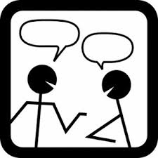

Communicate

Announcements The front page of the course’s web site is also the announcement page. Most of the announcements will point to small corrections to the weekly projects and responses to general email inquiries. Consult it at least once per day.
Office Hours
Name
Office Hours
McQuaid
Jason
Th 10:00–11:30, plus app’t
210
I will hold office hours at a fixed time during the week.
If you wish to meet assuredly, privately 1-1 or 1-2, send email and set up a separate appointment.
Reasons for office hours visits include but are not limited to:
concerns about pair programming
question about the results of the test fest
for a general concern about a milestone or coding
for a concern about the grade for a code/design inspection
If an answer demands a correction to a homework assignment, the change will be announced on the course homepage.
Email You are welcome to send email to the listed address and you are almost always guaranteed to get an answer within 24 hours, If you send email to other addresses, we will ignore them because they violate the course specifications, and learning to live up to specifications is critical.
No Language-Specific Help But, because we don’t know all the languages you chose and know all of them to different degrees, we cannot and will not help you with the details of your chosen language. The point of letting you choose is to let you figure out how to find, distill, and apply language-specific resources. You will quickly see how to adapt this to the languages that your future employers choose for you.